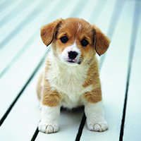
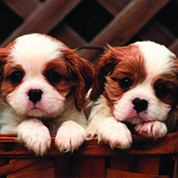
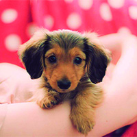
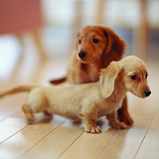

A puppy is born with their eyes closed and they do not open until your puppy is 3 weeks of age.
The puppy does not begin trying to walk until, as early as 2 weeks and as late as 5 weeks old.
Out of the 5 senses: Touch, Taste, Smell, Hearing and Seeing, a puppy first experiences touch.
At about 6 weeks old, the mother will start encouraging her pups to become more independent.
If the puppy is a mixed breed and you're not sure which to pick, look at his or her feet, large paws
most often tend to grow into good sized adults.
Puppies sleep 90% percent of the day for their first few weeks.
At 8 weeks old a puppy can be separated from their mother and can sleep for up to 20 hours a day.
Puppies are cute and fun to be around but they are a lot of work. It requires major responsiblities so please, before you adobt, or accept a puppy read below.
- Here Are Some Fun Facts:
most often tend to grow into good sized adults.